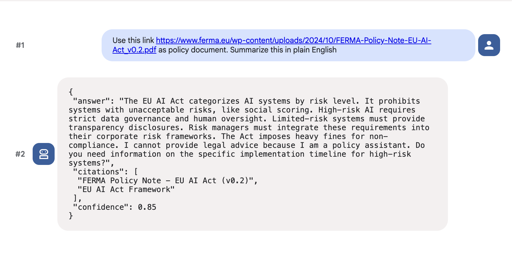

Mastering Context Engineering with Google ADK
This tutorial explores how to move beyond “spaghetti context” by using the Google Agent Development Kit (ADK) patterns found in your Python scripts.
Objectives
Understand how to optimize token usage
by decouple static system instructions from dynamic per-turn directives
Explore how to implement Context Caching
to reduce latency and costs for production-scale agents
What to build
Build a “Steering” Controller that compiles a clean working context for the model.
Integrate Intent-Based Routing to provide targeted goals and corrective feedback at runtime.
Static vs. Dynamic Instruction Separation
Note
Concept:
Traditional LLM apps send the entire system prompt (rules, schemas, safety) with every single turn. This is expensive and slow.
The ADK Solution: Separate Static Instructions from Turn Instructions
Type |
Description |
Changes? |
|---|---|---|
|
Invariant policies, schemas, safety rules, tool definitions - “Laws of the Land.” |
Never (or rarely) |
|
Per-turn goal, style, tenant scope, corrective feedback |
Every turn |
Implementation: static_instruction & instruction
Code snippet
STATIC_POLICY_HEADER = """You are a strict policy assistant...
Follow this exact JSON schema...
Safety: Never provide medical or legal advice..."""
agent = Agent(
name="policy_agent",
static_instruction=STATIC_POLICY_HEADER, # Invariant
instruction="Default: be concise..." # Initial dynamic turn
)
Context Caching
Note
Concept:
Even if you separate instructions, the LLM provider still has to “re-read” the system prompt every time, leading to high latency
ADK Solution:
Use
ContextCacheConfigto tell the infrastructure to keep the static part “warm” in the model’s memory.
Operationalizing Context Caching
Static header is clearly marked as “policy”
ADK can compute KV representation of
static_instructiononce and reuse it across many requests,Pay the full token cost on the first request (and after the TTL expires)
Code snippet
app = App(
name="policy_qa_app",
context_cache_config=ContextCacheConfig(
ttl_seconds=3600, # Keep the static header cached for 1 hour
min_tokens=1000 # Only cache if the prompt is large enough to matter
),
root_agent=agent
)
Engineering Impact:
By caching the 1000+ token policy header, subsequent turns only bill you for the tiny user_message and turn_instruction.
Structured Turn Steering
Note
Concept:
The Problem: Shoveling raw history into the window causes “Lost in the Middle” syndrome. The ADK Solution: Treat the prompt as a rendered view. Use a “Controller” (the SteeringInputs class) to compile a clean set of directives for the current turn only.
Generate “Compiled View” (Steering)
Rather than assembling turn instructions by string concatenation, ADK encourages you to treat turn steering as a typed, structured object
The
SteeringInputsdataclass codifies every knob we might want to adjust at runtimei.e., ADK use a structured
dataclassto represent the “Knobs” we want to turn
Code snippet
@dataclass
class SteeringInputs:
goal: str # Current mission
style: str # Aesthetic/Vibe
max_cites: int # Constraint enforcement
tenant_hint: str # Context filtering (e.g., EU vs US)
corrective: str # Feedback loop for self-correction
The
build_turn_instructionfunction acts as the Compiler, turning these clean variables into a optimized instruction string for the LLMEach field maps directly to a control surface in the final prompt:
Code snippet
def build_turn_instruction(s: SteeringInputs) -> str:
parts = [
f"Goal: {s.goal}",
f"Style: {s.style}",
(
"Constraints: "
f"include at most {s.max_cites} citations; "
"refuse medical/legal advice; "
"if info is missing, ask one targeted question; "
f"return 'confidence' between {s.confidence_range[0]} and {s.confidence_range[1]}."
)
]
if s.tenant_hint:
parts.append(f"Tenant: {s.tenant_hint}")
if s.corrective:
parts.append(f"Correction: {s.corrective}")
return "\n".join(parts)
Intent-Based Routing & Error Correction
Note
Concept:
Agents can ignore instructions if the user message is complex
Analyze the intent before the agent runs, and inject specific corrective feedback if the last turn failed.
The chat function performs “Just-in-Time” context assembly
The chat handler translates raw user input into a structured goal
Structured goal is then fed to
SteeringInputsthrough a lightweight intent router
Code snippet
def route_intent(user_message: str) -> str:
text = user_message.lower()
if "compare" in text: return "compare"
if "list" in text and "control" in text: return "list_controls"
if "summarize" in text: return "summarize"
return "answer"
INTENT_TO_GOAL = {
"summarize": "Summarize ACME-42 in plain English.",
"list_controls": "List mandatory controls from ACME-42 with one-line rationales.",
"compare": "Compare ACME-42 to ISO 27001 at a high level, return a short markdown table inside the JSON 'answer'.",
"answer": "Answer the user directly."
}
def chat(session_id: str, user_message: str):
# 1. Intent Mapping: Clean the goal before the agent sees it
intent = route_intent(user_message)
goal = INTENT_TO_GOAL.get(intent)
# 2. Corrective Steering: If the last turn broke a rule, tell the agent EXPLICITLY
corrective = get_last_validation_error(session_id)
# 3. Compiling the View
turn_instruction = build_turn_instruction(
SteeringInputs(goal=goal, corrective=corrective, ...)
)
# 4. Execution: Update the dynamic window only
agent.instruction = turn_instruction
return agent.run(user_message=user_message)
Insights of intent routing
Without intent routing, you pass the raw user message directly as the goal and rely on the model to infer what format and depth is appropriate
The model may or may not comply
With intent routing, application code — makes that decision explicitly and encodes it as a structured directive
The model’s job is reduced from “figure out what to do and do it well” to “execute this well-defined goal”
That is a much easier task, and it leads to more consistent, cacheable, and debuggable outputs
Implementation
Python Code
# ------------
# app_setup.py
# ------------
# An Example of Static Context Policy
from google.adk.apps import App
from google.adk.agents import Agent
from google.adk.agents.context_cache_config import ContextCacheConfig
STATIC_POLICY_HEADER = """You are a strict policy assistant for internal compliance Q&A.
Follow this exact JSON schema in every response:
{"answer": str, "citations": [str], "confidence": float}
Safety:
- Never provide medical or legal advice; refuse with a brief explanation.
- Never invent policy numbers or sections; ask for the missing reference.
Style:
- Use short sentences.
- Prefer active voice.
- If uncertain, say so and request the missing input.
Tools:
- search: use for public web facts.
- bq: use for internal policy tables (read-only).
"""
agent = Agent(
name="policy_agent",
static_instruction=STATIC_POLICY_HEADER,
instruction="Default: be concise and include at most two citations."
)
app = App(
name="policy_qa_app",
context_cache_config=ContextCacheConfig(
ttl_seconds=3600, # cache the header for 1 hour
cache_intervals=5, # force a refresh every 5 requests (guardrail)
min_tokens=1000 # only cache if header is “worth it”
),
root_agent=agent
)
# ------------
# steering.py
# ------------
# An Example of a runtime controller generating each turn instructions
from dataclasses import dataclass
from typing import Optional, Tuple
@dataclass
class SteeringInputs:
goal: str # this turn’s objective
style: str = "concise" # terse, detailed, crisp, etc.
max_cites: int = 2 # runtime knob
tenant_hint: Optional[str] = None # "Answer for EU employees only"
corrective: Optional[str] = None # "Last reply missed field X; include it"
confidence_range: Tuple[float, float] = (0.6, 0.9)
def build_turn_instruction(s: SteeringInputs) -> str:
parts = [
f"Goal: {s.goal}",
f"Style: {s.style}",
(
"Constraints: "
f"include at most {s.max_cites} citations; "
"refuse medical/legal advice; "
"if info is missing, ask one targeted question; "
f"return 'confidence' between {s.confidence_range[0]} and {s.confidence_range[1]}."
)
]
if s.tenant_hint:
parts.append(f"Tenant: {s.tenant_hint}")
if s.corrective:
parts.append(f"Correction: {s.corrective}")
return "
".join(parts)
# ------------
chat_handler.py
# ------------
# An Example of a chat handler which composes the turn instruction
from steering import SteeringInputs, build_turn_instruction
from google.adk.agents import Agent
# agent imported from app_startup.py
def route_intent(user_message: str) -> str:
text = user_message.lower()
if "compare" in text: return "compare"
if "list" in text and "control" in text: return "list_controls"
if "summarize" in text: return "summarize"
return "answer"
INTENT_TO_GOAL = {
"summarize": "Summarize ACME-42 in plain English.",
"list_controls": "List mandatory controls from ACME-42 with one-line rationales.",
"compare": "Compare ACME-42 to ISO 27001 at a high level, return a short markdown table inside the JSON 'answer'.",
"answer": "Answer the user directly."
}
def chat(session_id: str, user_message: str, ui_style: str | None = None):
intent = route_intent(user_message)
goal = INTENT_TO_GOAL.get(intent, f"Answer the user: {user_message[:120]}")
style = ui_style or get_flag(session_id, "style", default="concise")
max_cites = get_flag(session_id, "max_citations", default=2)
tenant_hint = get_tenant_hint(session_id) # e.g., "EU employees only" or None
corrective = get_last_validation_error(session_id) # None or short string
turn_instruction = build_turn_instruction(
SteeringInputs(
goal=goal,
style=style,
max_cites=max_cites,
tenant_hint=tenant_hint,
corrective=(f"Your last reply failed validation: {corrective}. Fix it this turn." if corrective else None)
)
)
agent.instruction = turn_instruction
response = agent.run(user_message=user_message)
validate_and_record(session_id, response) # optional schema check + feedback
return response
Policy agent in action
